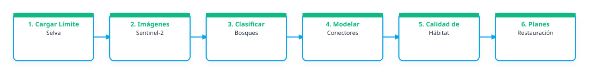

1. Problema que busca atender
Debido a la fuerte presión que sufren el territorio por la expansión de las manchas urbanas, zonas agrícolas y ganaderas, así como los incendios forestales y el cambio climático, se han fragmentado los escosistemas de la región, perdiendo riqueza natural y como consecuencia, aislando las interconexiones entre las especies de flora y fauna, a su vez que pone en riesgo los servicios ecosistemicos hacia las poblaciones de la región.
2. Relevancia del problema
No se cuenta con información actual y confiable del territorio, al mismo tiempo que la escala de trabajo es a poco detalle generalizando la información lo que propicia a una inadecuada toma de decisiones, gestión, manejo y aprovechamiento de los recursos naturales del territorio.
3. Producto esperado
Tipo de entregable: Mapa; Capa geoespacial; Indicador; Script; Flujo de trabajo; Dashboard / tablero; Visor web; Repositori de Datos
Descripción del producto: Una metodología que puedan entender los técnicos de las áreas naturales protegidas para una retroalimentación que conlleve a una mejora de los datos (usos de suelo, conectividad, áreas transfornadas, etc.), con el fín de poder realizar analisis de la situación del territorio lo más pronto posible y de manera precisa (hasta donde lo permitan los datos), para toma de desiciones y acciones que permitan un mejor manejo del territorio y por lo tanto, restaurar y conservar los recursos naturales. Creación de productos geoespaciales vectoriales y raster y una página geoweb para consulta y visualización.
Componentes de despliegue sugeridos: Repositorio GitHub; Google Earth Engine App, Qgis
Nivel de acceso previsto: institucional
Forma de uso institucional: Consulta en linea, usado en reuniones de toma de desiciones con acompañamiento del personal técnico operativo, actualizado por personal institucional de las direcciones de las áreas naturales protegidas, validado en campo por personal de las direcciones de áreas naturales protegias, replicado en las demás regiones admnistrativas de la CONANP antes mencionadas.
Requiere actualización: Sí, anual
Frecuencia / Método de actualización: Actualización de la cartografía y datos geospaciales para el monitoreo de la conectividad del paisaje.
4. Flujo de trabajo preliminar
El siguiente diagrama conceptualiza el procesamiento de datos y flujo técnico sugerido para la solución:

Descripción del flujo metodológico imaginado:
Seleciconar imágenes de satélite a comparar > Procesar en equipo de computo > Generación de Script > Visualización > Validación en Campo > Generación de capa > Retroalimentación/afinación > Publicación.
Algoritmos o índices clave: NDVI, NDMI, Clasificación Supervisada, métricas del paisaje, google earth engine, R Studio, Qgis, Python, Métricas del Paisaje, Árbol de decisiones y/o Mapa Lógico.
5. Datos e insumos identificados
Insumos satelitales y capas locales necesarias para el despliegue del prototipo:
| Insumo / Variable | Detalle en la Ficha |
|---|---|
| Datos Satelitales / Fuentes Copernicus | Sentinel-2 / óptico; Sentinel-3; Productos/índices de vegetación; Biomasa / carbono; Agua, humedad o humedales, copernicus land_cobertura del suelo |
| Datos Locales Disponibles | Cartografía de los usos de suelo y vegetación actuales del sitio de acuerdo a los tipos de vegetación que se utiliza en méxico, siendo precisos en la diferencia de los tipos de bosques y selvas y demás tipos de vegetación en la región, a una escala de 1:50,000 y 1:250,000 |
| Datos Requeridos / Faltantes | Datos de campo para los tipos de usos de suelo y vegetación, de radar o infrarrolo (capas) imágenes de alta resolución, datos de precipitación de las estaciones meteorológicas. |
| Documento Relacionado | Bosques de Chiapas-21_52_23.jpg |
| Enlaces Externos / Observaciones | Enlace externo |